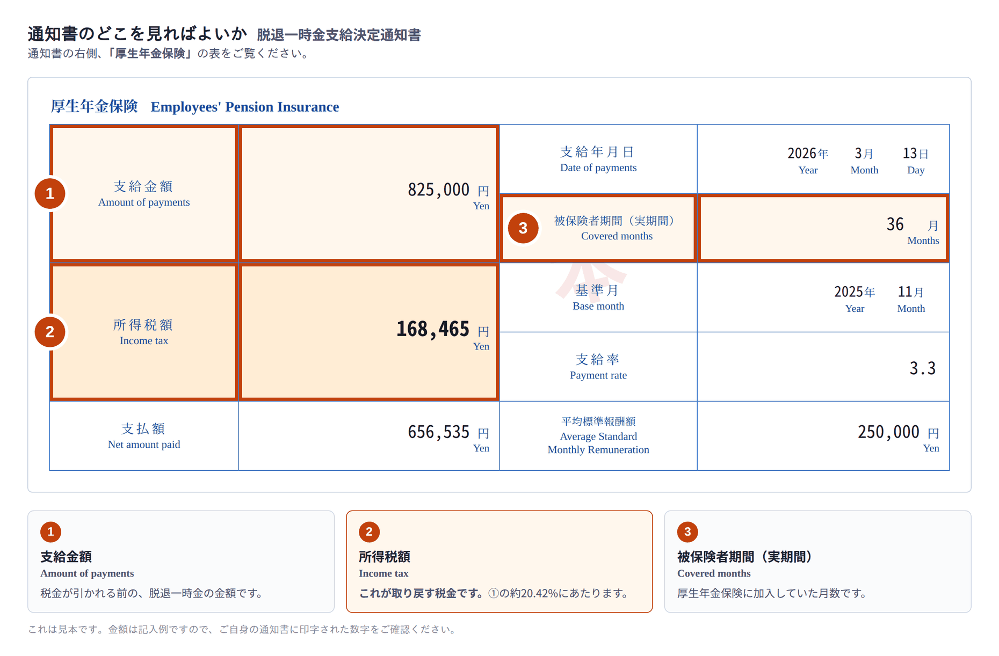

脱退一時金を受け取るとき、日本の法律により20.42%の所得税が差し引かれています（源泉徴収）。日本で確定申告をすれば、この税金は取り戻せます。税理士が手続きをすべて代行します。
お手元の「脱退一時金支給決定通知書」から、3つの数字を入力してください。
入力した内容が送信されることはありません。すべてブラウザの中だけで計算しています。
空欄のままにすると、①の20.42%として計算します。
税務署から還付される見込み額
0円
入力された数字をもとにした概算です。実際の申告とまったく同じ計算式を使っていますが、最終的な金額は税務署が決定します。前払いは一切ありません。費用はすべて、還付金が入金されてから差し引きます。
所得税の還付は、脱退一時金を受け取った年の翌年1月1日から5年間請求できます。—以降に脱退一時金を受け取った方は、いまからでもお手続きできます。
※ 脱退一時金そのものの請求期限（日本を出国してから2年）とは、まったく別の期限です。すでに脱退一時金を受け取っている方が対象になります。
3つとも、通知書の右側にある「厚生年金保険」の表に印字されています。

通知書は、日本年金機構が脱退一時金の支給を決定したあとに郵送されます。届いてからお申し込みください。還付の請求はそこから5年間できます。
提携の社会保険労務士事務所が、日本年金機構への再発行の請求を代行できます（2,000円）。お申し込みのときにお知らせください。
脱退一時金が支払われた時点で、すでに日本を出国しています。そのため控除が一切適用されないまま、一律20.42%が差し引かれています。
所得税法は、非居住者がこの一時金を「退職所得」として課税し直すことを認めています。これを退職所得の選択課税といいます。
この方法では、まず退職所得控除（加入1年につき40万円、最低80万円）を差し引きます。多くの場合、控除額が一時金を上回るため税額が0になり、20.42%が全額戻ります。
還付を受ける権利は法律で認められています。ただし自動では戻ってきません。日本で確定申告をする必要があり、すでに出国している方の場合は、日本国内に納税管理人を立てることが前提になります。そこを私たちが引き受けます。
通知書の原本が当事務所に届いてから、おおむね2〜3か月です。
お名前・ご連絡先と、還付金の振込先口座をご入力いただきます。お支払い情報やカード情報は必要ありません。
送付先とチェックリストをメールでお送りします。通知書をなくされた場合は、再発行の請求も代行できます。
税理士が納税管理人となり、退職所得の選択課税の申告書を作成して、所轄の税務署へ提出します。
税務署から当事務所の口座に還付金が入金されたあと、報酬を差し引いてご指定の口座へ送金します。送金が完了しましたら、メールでご連絡します。
海外からのお申し込みが大半です。ご自身で確認していただける事実だけを挙げます。
すべて還付金から差し引きます。前払いは一切ありません。
初期費用は0円です。お客様から当事務所へお金をお送りいただくことはありません。税務署からの還付金を受け取り、そこから報酬を差し引いて、残額をご指定の口座へお送りします。還付が受けられなかった場合、費用は一切いただきません。